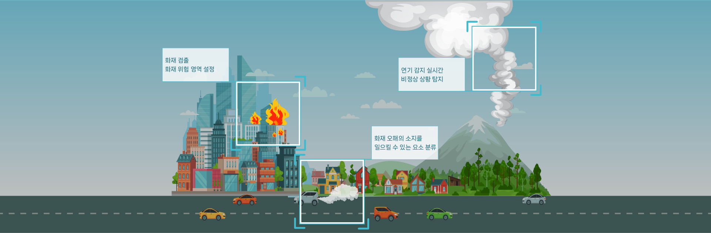

IDENTIFICATION
AI VISION
AI Vision
인공지능 기반 비전인식 기술을 활용하여 생산형 공장의 공정 효율성 향상을 위한 Smart Factory 솔루션 불규칙, 비정형적인 제품의 검사 분류 가능. 빅데이터 분석을 통한 수율 증대 및 생산 효율화 가능
AI Vision 솔루션
AI Vision 학습 서비스
샘플 이미지 입력
자동수집 라이프사이클 관리
딥러닝 학습
요청 및 이력관리 특화모델 기반 학습
평가
다수 모델 동시 비교평가
모델 확정
모델 버전 관리
모델 배포
원클릭 자동 배포
AI Vision 판정시스템
이미지 획득
판정을 위한 이미지 획득
이미지 판정
획득한 이미지 판정 요청
딥러닝 판정
원클릭 자동 탑재
판정 모니터링
성능지표 대시보드
판정 결과 전송
학습 이미지 자동 전송
서비스 특징
01
SaaS 서비스 방식으로 성능 높은 최신 모델을 빠르게 고객에게 서비스하여, 높은 정확도를 보장합니다.
학습 유형별 높은 성능의 최신 모델을 탑재하고, SaaS 서비스 방식으로 제공하여 고객이 즉시 사용 가능합니다. 학습 성능을 최고로 높게 수행할 수 있는 Hyper Parameter 추천 기능을 제공합니다.
02
고객 업무 프로세스와 산업 특성을 기능 반영하여, 통합 관리 관점의 최적화 기능을 제공합니다.
온라인 모델 배포, Data 자동 수집 기능, 판정모델과 이미지 데이터 이력관리 기능으로 판정과 학습서비스의 라이프사이클 관리를 제공합니다. 판정시스템의 판정 모델 원클릭 실시간 탑재와 Dashboard 제공으로 모델 교체 및 현황 모니터링이 용이합니다.
03
다양한 Edge Device 와 경량화 모델 지원을 통하여, 현장 성능 및 비용 최적화를 지원합니다.
EdgeTPU, Jetson의 Edge Device 지원으로 비용 효율화 하고, TensorRT, TF Lite의 경량화 모델 지원으로 빠른 판정속도를 제공합니다. 판정시스템의 GPU 메모리 관리 및 단일 GPU의 Multi 판정 지원합니다.
04
핵심 컨텐츠 중심의 학습 흐름 구조로 UX 구성을 통하여, 고객이 쉽게 사용할 수 있습니다.
이미지, 학습, 모델의 핵심 컨텐츠 중심으로 3 분할 화면에 의한 학습흐름 방식 제공하여 사용이 편리하게 구성되어 있습니다. 옵션 자동 설정 통한 최소한의 선택으로 쉽게 학습할 수 있는 일반인 모드와, 중요한 설정이 가능한 전문가 모드로 수준별 서비스를 제공합니다.
05
GCP Cloud 사용과 GCP AI 서비스 연계 구성하여, GPU 등의 인프라 유연성 및 GCP AI 서비스 활용이 용이합니다.
학습을 위한 GPU를 포함하여 고객사별 인프라 구성의 확장 및 축소를 유연하게 운영 가능합니다. GCP AI Platform, AutoML 등의 성능 좋은 Google AI 서비스 활용이 용이합니다.
영상 관제 AI 솔루션
다중 얼굴인식과 고도화된 사람 검출을 적용한 통합 영상인식 기술
다중 얼굴인식 뿐 아니라 고도화된 사람 검출 방식으로 유사도를 파악, 보행 및 혼잡한 환경에서도 빠르고 정확하게 대상을 인식 합니다.
기존 CCTV 장비에 쉽게 적용 가능한 클라우드향 솔루션
클라우드 지향 솔루션으로서 서버 구축을 위한 최소한의 하드웨어 설치로 AI 클라우드 서버와 연동하여 쉽고 빠른 성능 업데이트가 가능하며, 기존의 CCTV 그대로 사용할 수 있습니다.
별도의 설치 필요없이 24시간 관제기능을 제공하는 대시보드
웹과 모바일 구분없이 언제 어디서든 접근 가능한 URL을 제공하여 별도의 어플리케이션 설치 없이 효율적이고 정확하게 전체 시설 관리를 모니터링 할 수 있습니다.
안전장비 미착용 감지
안전장비 미착용 방지를 통해 안전사고 최소화 (안전모, 안전화, 하네스, 안전고리 등)
긴급 상황 감지
작업장 내 작업자 쓰러짐, 달리기, SOS 행동인식을 통한 긴급상황 대처
위험 지역 침입 감지
개구부 낙상, 중장비 근접, 출입통제구역 침입 시 긴급 대처
위험 상황 감지
화재, 위험물질 누수, 특정 시설 온도 등을 통해 위험 상황 알림
영상 관제 AI 솔루션 구성도
FIRE DETECTION
AI 화재 감지
모니터링 카메라와 서버를 네트워크로 연결하여 연기의 초기 단계를 감지하는 화재 감지 AI 솔루션입니다. SaaS기반 솔루션으로 기존 사용중인 CCTV 카메라와도 쉽고 빠르게 연동이 가능하며, 높은 정확도로 발화 연기를 감지, 감지 즉시 실시간 감지 경보를 전송합니다.
영상 관제 AI 솔루션
AI로 발화 초기 시점 연기 발생 감지
AI 연기 감지 솔루션은 수백만 개의 이미지를 실시간 받아 산불 연기를 감지하여 큰 불로 번질 수 있는 상황을 예방합니다.
화재 위험 발생 시, 실시간 알람 전송
연기 감지 시에 대시보드와 문자 및 이메일을 통해 즉각적인 알람을 받을 수 있습니다. 비상사태 후에도 화재 전 4분 타임랩스 영상을 통해 산불 상황을 분석하고 확인할 수 있습니다.
야간 산불 감지, 발화 위치 추정 기능
낮 시간 산불 감지는 기본, IR 카메라를 통해 야간에도 정확한 산불 감지가 가능합니다. 또한 산불 감지 시에 경도와 방위 범위를 알려줌으로써 좀 더 신속하게 현장 출동을 할 수 있습니다.

화재 감지 AI 솔루션 프로세스
화재 감지 카메라
기존에 설치되어 있는 카메라 활용
클라우드 활용 AI
딥러닝 알고리즘을 사용하여 이미지 분석 및 연기를 감지
즉각 알림
연기 확인 시 사용자에게 즉시 알림 전송
출동
모니터링 라이브 링크를 통해 산불 확인 후 출동 결정
딥러닝